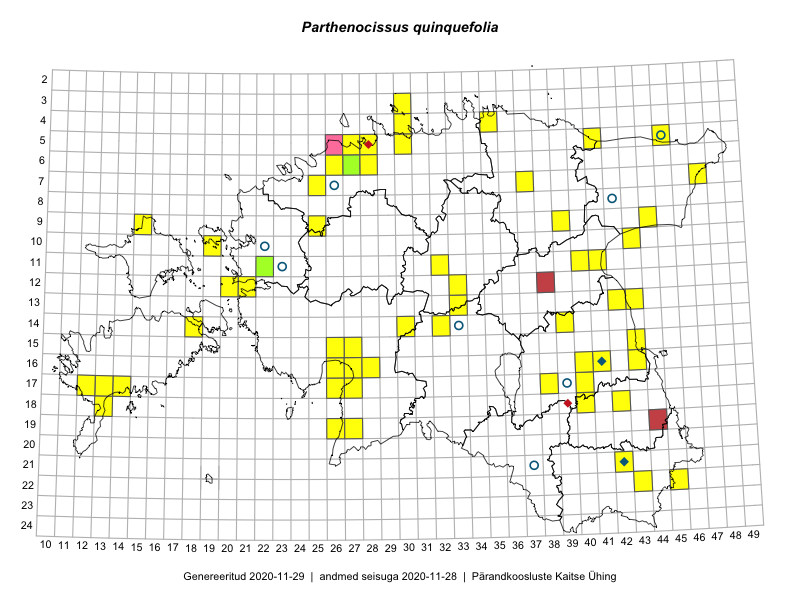

Parthenocissus quinquefolia
Uuendatud: 2016-12-08
Kaardile koondatud taksonid: Parthenocissus quinquefolia (L.) Planch.

Kaart põhineb 47 vaatlusel. Taime on leitud 34 ruudust.
| Ruut | Vaatleja(d) | Vaatlusaeg | Kirje tüüp | Viide andmebaasikirjele |
|---|---|---|---|---|
| 12-20 | Ott Luuk | 2014-07-25 | punkt | vaata PlutoFis |
| 16-41 | Peedu Saar, Eerik Leibak | 2015-07-30 | punkt | vaata PlutoFis |
| 05-45 | Tiit Hallikma, Toomas Kukk | 2015-07-21 | punkt | vaata PlutoFis |
| 11-41 | Peedu Saar | 2015-08-22 | punkt | vaata PlutoFis |
| 09-44 | Toomas Kukk | 2014-07-12 | ruut/ala | vaata PlutoFis |
| 07-47 | Thea Kull, Eerik Leibak | 2015-07-21 | punkt | vaata PlutoFis |
| 13-42 | Thea Kull, Meeli Mesipuu | 2015-08-14 | punkt | vaata PlutoFis |
| 13-43 | Thea Kull, Meeli Mesipuu | 2015-08-14 | punkt | vaata PlutoFis |
| 05-41 | Meeli Mesipuu, Timo Luhamäe | 2015-07-24 | ruut/ala | vaata PlutoFis |
| 19-27 | Indrek Tammekänd | 2015-05-16 | punkt | vaata PlutoFis |
| 15-26 | Indrek Tammekänd | 2015-05-12 | punkt | vaata PlutoFis |
| 16-26 | Meeli Mesipuu | 2015-06-27 | punkt | vaata PlutoFis |
| 12-33 | Timo Luhamäe, Meeli Mesipuu | 2015-06-11 | punkt | vaata PlutoFis |
| 07-37 | Karin Kikas, Elle Rajandu | 2015-06-02 | punkt | vaata PlutoFis |
| 12-33 | Meeli Mesipuu, Timo Luhamäe | 2015-06-11 | ruut/ala | vaata PlutoFis |
| 13-43 | Meeli Mesipuu, Thea Kull | 2014-08-14 | ruut/ala | vaata PlutoFis |
| 13-42 | Meeli Mesipuu, Thea Kull | 2015-08-14 | ruut/ala | vaata PlutoFis |
| 17-14 | Karin Kikas, Elle Rajandu | 2015-07-22 | punkt | vaata PlutoFis |
| 11-32 | Ott Luuk, Toivo Sepp | 2015-08-18 | punkt | vaata PlutoFis |
| 16-27 | Indrek Tammekänd | 2016-06-01 | punkt | vaata PlutoFis |
| 16-43 | Rein Kalamees, Eerik Leibak | 2016-06-13 | punkt | vaata PlutoFis |
| 21-42 | Sander Laherand, Ott Luuk | 2016-06-16 | ruut/ala | vaata PlutoFis |
| 11-40 | Eeva-Maria Jeletsky, Tarmo Niitla | 2016-06-05 | ruut/ala | vaata PlutoFis |
| 11-40 | Eeva-Maria Jeletsky, Tarmo Niitla | 2016-06-05 | punkt | vaata PlutoFis |
| 11-41 | Eeva-Maria Jeletsky, Tarmo Niitla | 2016-06-05 | ruut/ala | vaata PlutoFis |
| 11-41 | Eeva-Maria Jeletsky, Tarmo Niitla | 2016-06-05 | punkt | vaata PlutoFis |
| 18-40 | Tiit Hallikma, Toomas Kukk | 2016-06-13 | punkt | vaata PlutoFis |
| 06-28 | Toomas Kukk | 2016-07-04 | punkt | vaata PlutoFis |
| 06-26 | Tiina Elvisto, Eerik Leibak | 2016-07-04 | ruut/ala | vaata PlutoFis |
| 06-26 | Tiina Elvisto, Eerik Leibak | 2016-07-04 | punkt | vaata PlutoFis |
| 10-19 | Liina Oja, Rein Kalamees | 2016-07-07 | punkt | vaata PlutoFis |
| 10-19 | Liina Oja, Rein Kalamees | 2016-07-07 | punkt | vaata PlutoFis |
| 09-25 | Thea Kull, Oliver Parrest | 2016-07-06 | punkt | vaata PlutoFis |
| 09-15 | Eeva-Maria Jeletsky, Tarmo Niitla | 2016-07-13 | punkt | vaata PlutoFis |
| 09-39 | Ott Luuk, Eerik Leibak | 2016-08-09 | ruut/ala | vaata PlutoFis |
| 05-30 | Sander Laherand, Eerik Leibak | 2016-07-29 | punkt | vaata PlutoFis |
| 14-39 | Karin Kikas, Elle Rajandu | 2016-07-01 | punkt | vaata PlutoFis |
| 22-45 | Karin Kikas, Peedu Saar | 2016-08-18 | punkt | vaata PlutoFis |
| 16-27 | Indrek Tammekänd | 2016-08-27 | punkt | vaata PlutoFis |
| 14-18 | Mari Reitalu | 2016-08-15 | ruut/ala | vaata PlutoFis |
| 17-40 | Kersti Püssa, Rein Kalamees | 2016-07-28 | punkt | vaata PlutoFis |
| 14-18 | Mari Reitalu | 2016-08-15 | punkt | vaata PlutoFis |
| 16-27 | Tiit Hallikma, Tõnu Ploompuu | 2016-07-20 | punkt | vaata PlutoFis |
| 04-35 | Tõnu Ploompuu | 2016-07-16 | punkt | vaata PlutoFis |
| 04-35 | Tõnu Ploompuu | 2016-07-16 | punkt | vaata PlutoFis |
| 17-13 | Peedu Saar, Ott Luuk | 2016-10-08 | punkt | vaata PlutoFis |
| 21-42 | Ott Luuk, Sander Laherand, Susanna Vain | 2016-06-16 | punkt | vaata PlutoFis |